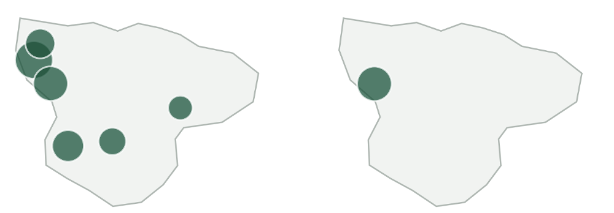
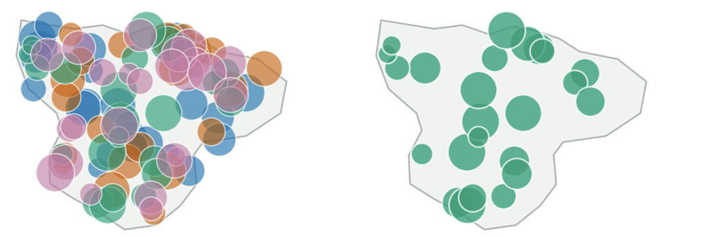

ITCS 5122 · Visual Analytics
Students learn the broad range of visualization and interaction, then use it on real problems.
- Broad coverageMultidimensional, time, geospatial, trees and graphs, text, trajectories · interactive views · design choices
- Historical designs to recent advancesExamples from hundreds of years ago to this year.
- Design, build, evaluate, presentHands-on tutorials in Tableau, Figma, and Vega-Lite; a broad range of evaluation techniques; three presentations per student.
- From your favorite datasets to real problemsIndividual presentation: you pick the dataset. Group project: build visualizations for domain experts with their data, and get their feedback.
- AI for Vis, Vis for AIAI that helps author visualizations, and visualization that shows what a model is doing.
Sparse display — don’t filter, highlight
Six sites. Filter to one and there is nothing left to compare it to.

Cluttered display — filter
96 sites in four groups. Graying the others out does not help; removing them does.

An example of the design choices we discuss in class: when is filtering the right call?